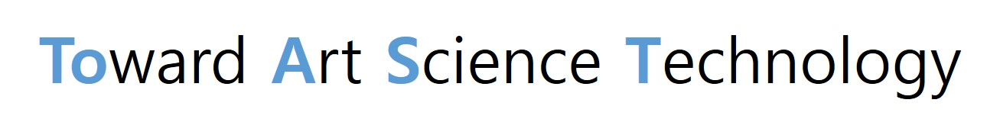
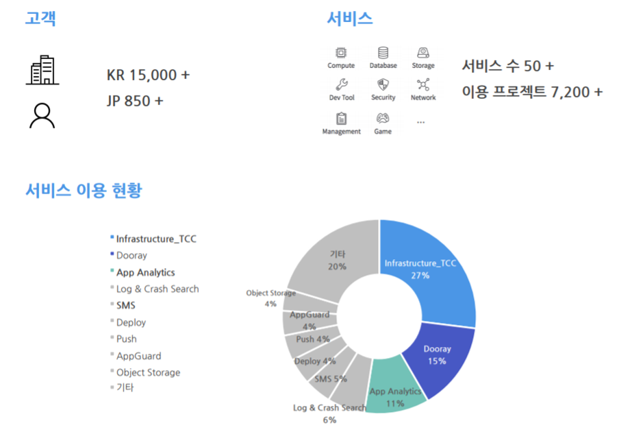
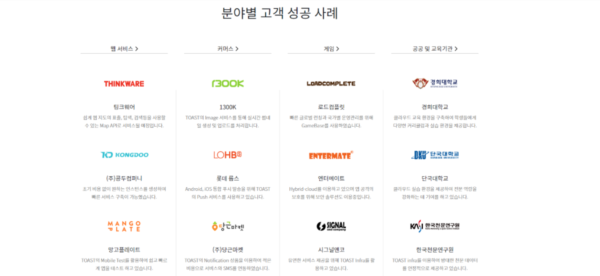

Toast Cloud란?
TOAST Cloud는 NHN 엔터테인먼트에서 제공하는 "통합 클라우드 서비스" 이며, TOward Art Science Technology 를 모토로 예술 과학 기술을 향한 새로운 세상을 만들기 위해 도전하는 열정을 말한다.
Toast 클라우드 특징
- Anyone : 누구나 쉽게 사용할 수 있는 클라우드 서비스
- Convenient : 개발에만 전념할 수 있도록 편리한 인프라와 플랫폼을 제공
- Easy : 웹 브라우저상에서 간단한 클릭만으로 서비스를 사용가능
- Efficient : 합리적인 비용으로 인프라와 플랫폼을 이용가능
Toast 클라우드 장점
- 클라우드 센터 접근성
Toast Cloud Center는 판교 인근 사무실에서 도보로 5분 내에 방문할 수 있는 거리에 있어 접근이 쉽고 서울 중심에서 DR Center로 구성할 수 있다.
- 유연한 인프라
대규모의 서비스 노하우와 오픈 소스 기술이 융화된 국내 최고의 퍼블릭 클라우드로 OpenStack 기반의 유연한 클라우드 인프라를 제공한다.
- 다양한 플랫폼
인프라, 콘텐츠, 분석, 게임, 보안, 알림 메시지, 기타 애플리케이션을 운영할 때 필요한 각종 유용한 기능을 제공한다.
- 하이브리드 클라우드
자체 기술력으로 설계, 구축한 도심형 데이터 센터로 물리 인프라와 가상 인프라를 동시에 활용할 수 있는 환경을 제공한다.
- 전문 인력
10년 이상 한게임, 벅스, 페이코 서비스를 통해 축적된 IT 운영 경험을 기반으로 안정적인 기술을 지원할 수 있다. 또한 클라우드 도입 전략 수립을 위한 컨설팅을 제공하며 전문 엔지니어와 24시간/365일 상담이 가능하다.
Toast 클라우드 서비스
- 대상
- 인프라 구축에 어려움을 느껴 1:1 기술 컨설팅이 필요하신 업체
- 보안이 중요한 서비스를 운영하고 있는 기업이나 공공기관
- 인프라를 효율적으로 이용하고 싶은 업체
- 중/대형 쇼핑몰 업체
- SMS, Push, Email 등의 통합 메시지 서비스가 필요한 업체
- 구성
- Infrastructure as a Service(IaaS) : Compute, Network, Database, Storage
- Platform as a Service(PaaS) : Security, Content Delivery, Game, Notification, Analytics, Application Service, Search 기타 등등이 있다.
Toast 클라우드 고객사례
현재 한국에는 15,000, 일본에는 850 이상의 고객들이 존재하며 아래 그림과 같이 분야별로 다양한 기업들이 TOAST Cloud의 다양한 서비스를 이용하고 있다. 현재 50개 이상의 서비스들 중 Instance를 가장 많이 이용하고 있고, 그 외에도 Dooray, App Analytics 등 다양한 서비스의 이용률이 증가하고 있다.
 Toast Cloud Customer Case / 출처 : TOAST 홈페이지토스트 클라우드의 고객사례는 크게 4가지로 웹서비스, 커머스, 게임, 공공 및 교육기관 등 많은 기업, 단체에서 NHN TOAST Cloud 서비스를 이용하고 있다.
 Toast Cloud Customer Case / 출처 : TOAST 홈페이지